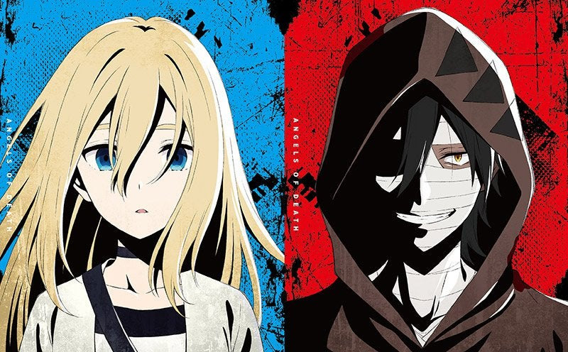
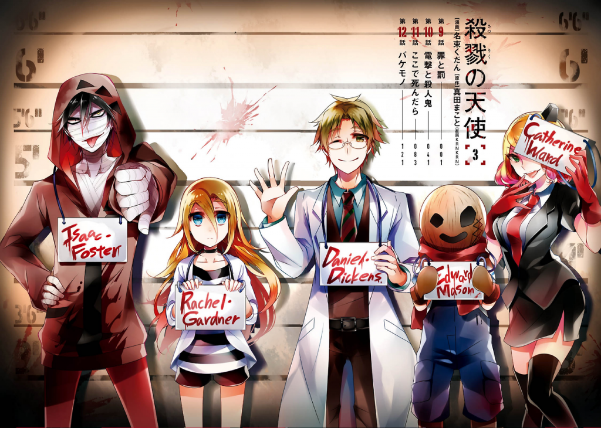
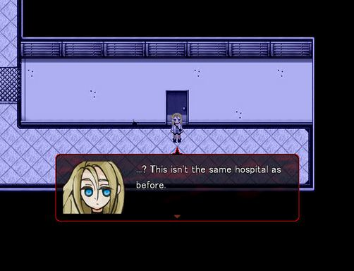
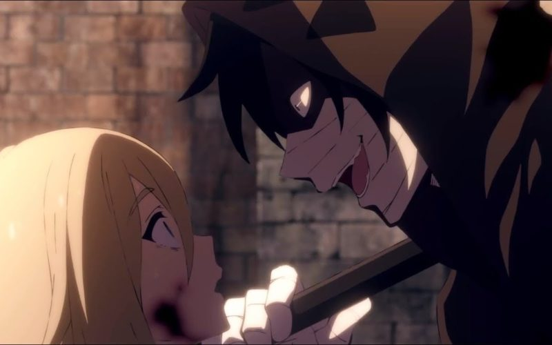

Videojuego

Buenas queridos lectores, y permitidme meter el pie por primera vez en una sección completamente nueva para mí, una a la que soy aficionado pero que sin embargo no domino tanto como querría, y esta es la de los videojuegos, en la que hoy hablaré de un RPG que me ha cautivado con su historia: Angels of death. En japonés Satsuriku no tenshi, este producto ha gozado de gran éxito consiguiendo una adaptación a manga y otra a anime, cuyo principio ya comenté en «Primeras impresiones temporada de verano anime 2018». Que un videojuego goce de tal éxito no es lo común, y supongo que a muchos les habrá surgido la duda de porqué éste sí. La respuesta es clara: la historia que narra, que además de morbo tiene interés.
Todo comienza cuando nuestra protagonista Rachel despierta sin recordar nada en un lugar extraño, oscuro, y en el que no hay un alma en pena salvo ella. Lo único que puede encontrar son extraños mensajes escritos que insinúan que es una presa que se adentrará en el resto de plantas del edificio para ser castigada por sus pecados. En un principio está asustada, pero tras recordar algo pierde todas sus ganas de vivir y pide a Zach, el asesino de la primera planta, que la asesine, a lo que él responde que sólo lo hará si le consigue sacar del edificio con vida.

La relación que se forjará entre estos dos protagonistas a lo largo del juego, a pesar de que en el fondo sea algo siniestro y enfermizo, será de una intensidad y profundidad tal que al final ambos personajes consiguen entrar en otro plano de la realidad, en aquel que te hace entenderlos y seguir jugando y jugando para conocer más de su pasado, su presente y finalmente su futuro, en el que siempre dudas de si esa promesa, más fuerte que el acero por los principios de ambos, llegará a llevarse a cabo. No deja de ser curioso el fondo religioso del juego, tanto en forma de crítica como de Oda, enfocado de manera principal en un tema tan universal como esencial: la redención que nuestros protagonistas buscarán de distintas formas, debo decir que todas ellas enfermizas. Esta búsqueda de la redención se hará de forma que como buen RPG el jugador sea partícipe del rumbo que la historia tomará, aunque no todo es de color de rosa, porque la verdad es que esto en concreto se hace de manera muy pobre. No hay ninguna ruta alternativa aparte del final oficial, y ni siquiera se te permite salir un poco de la historia principal, a pesar de que esta sea brillante. Los gráficos son rudimentarios, como cualquier juego RPG Maker indie, y los sonidos e imágenes de los cuadros de diálogo son pobres y repetitivos. La jugabilidad es muy simple, aunque el diseño esté bastante decente y acompañe perfectamente al ambiente y espíritu de la historia, de forma que se podría resumir en diálogos muy extensos contando la historia, algunos puzles y pequeños minijuegos consistentes en huir y que son muy fáciles. Además, el juego no se encuentra en español, pero el nivel de inglés que exigen es bastante asequible.

Pero una cosa no quita la otra, y repito que este es un juego en el que mas bien ves una película un poco interactiva. Cada capítulo (4 en total) tiene una duración aproximada de 2,5 h cada uno, y los consumes ávido por saber cómo terminará la historia de nuestros fantásticamente desarrollados protagonistas, cosa que sin embargo no podemos decir del resto de personajes del juego. Aquí en este párrafo me limito a vender el resto de adaptaciones de la historia, hasta ahora todas fieles (aunque para tener la experiencia completa recomiendo al 100% jugar al videojuego). El juego cuenta con un manga bastante entrado en la historia, al que no creo que le queden muchos capítulos y que desarrollan un poco más al resto de personajes, y además manga que puedes encontrar en español. El anime está en este mismo momento en antena, contará con doce capítulos que abarcarán todos los acontecimientos de la narración y es lo que a mí me animó a probar el juego, así que lo recomiendo.

¿Puede confiar Rachel en Zach, un asesino en serie? ¿Cuál es el oscuro pasado de Rachel? ¿Es realmente una pecadora que merece morir? ¿Quién está detrás de todo el edificio? ¿Cómo es Zach? ¿Cumplirán su promesa? Con mucha insistencia, te insto a que le des una oportunidad este juego.